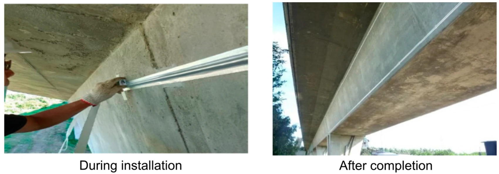

01 / RESEARCH
Making construction
processes observable.
Computer vision is the connecting method across my work. I combine imaging, multimodal sensing, and digital models to understand how construction processes evolve, then use that evidence to support monitoring and control.
Postdoctoral research · TUM · Ongoing
Multimodal sensing & adaptive operations
Combining computer vision and laser profiles to assess geometry, deformation, and repeatability in robotic fabrication. Within TRR 277, this includes sensing for closed-loop control of shotcrete deposition.
Broader direction: fuse optical, mechanical, and ultrasonic evidence with physical constraints to estimate material state and inform parameter adaptation.
Postdoctoral research · TUM · Ongoing
Digital twins for concrete production
Connecting material characterisation and process information from batching through transport, pumping, and placement. My work explores how optical measurements and rheological evidence can represent evolving material state and support feedback across the production process.
Research directions: camera and laser sensing, correlation with yield stress and viscosity, and integration with concrete production and mobile robotic workflows.
Master’s research · IIT Madras
Computer vision for project progress
Turning GPS-tagged smartphone images into location-specific progress information for pipeline-laying projects. Convolutional neural networks identify field activities and connect observations to the digital project model in AutoCAD.
Construction management purpose: improve the timeliness and consistency of progress information across dispersed work fronts. M.Tech. thesis recognised by L&T Construction in 2019.
Postdoctoral research · TUM · Ongoing

Digital twins for bridge structural monitoring
Linking physical infrastructure to numerical models through a multi-property sensor network. The research connects local durability and stiffness indicators with measured structural response to inform condition assessment and action strategies.
Focus: sensor-to-model integration, strain measurements, structural analysis, and the relationship between local deterioration and global behaviour.
A management question
at the centre.
How can construction systems sense, predict, and act before quality, time, or resource failures occur? My research connects digital observations with decisions about process waste, productivity, and the reliability of construction operations.